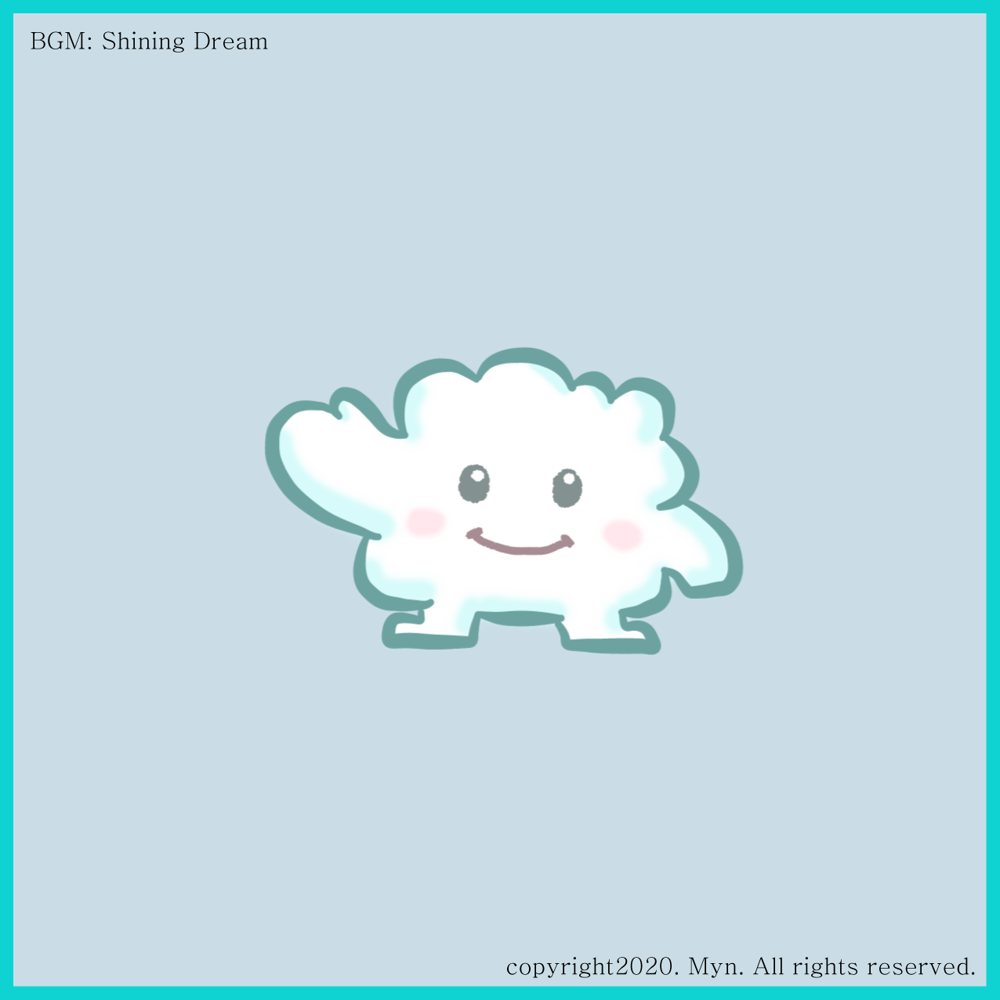
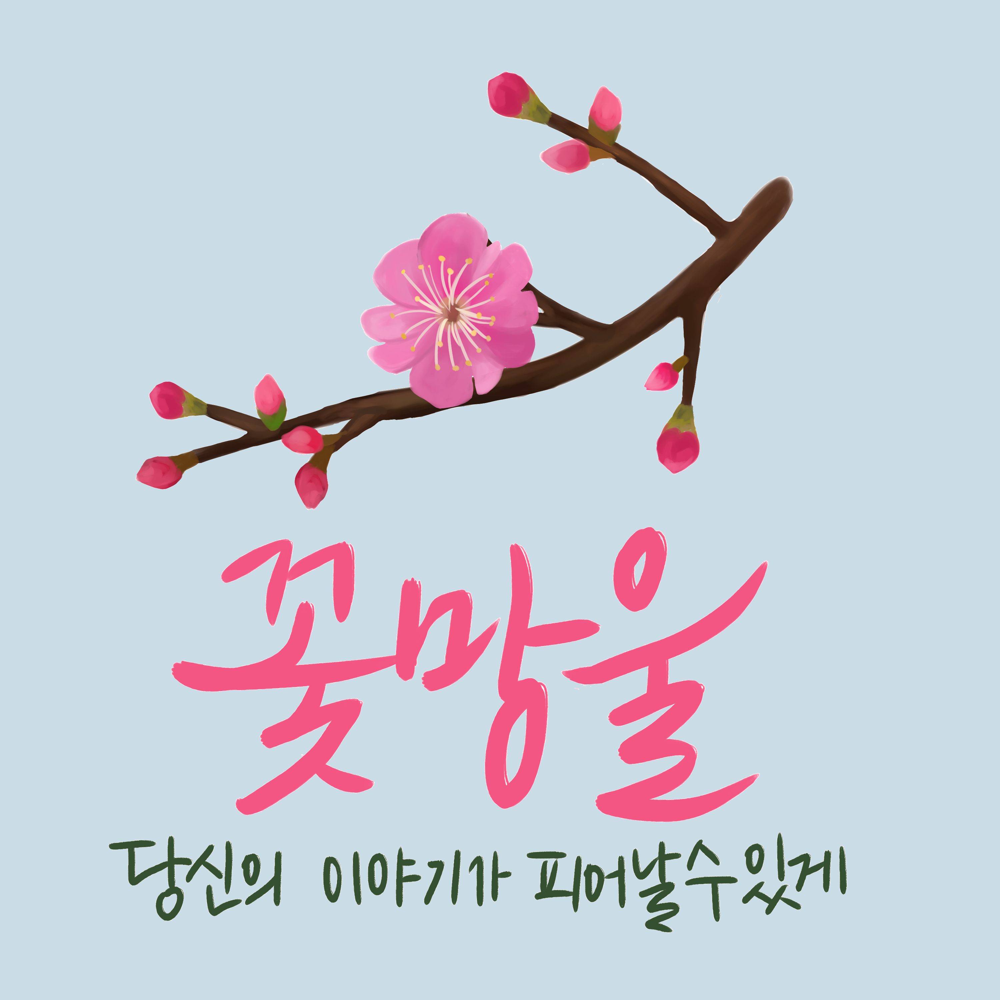
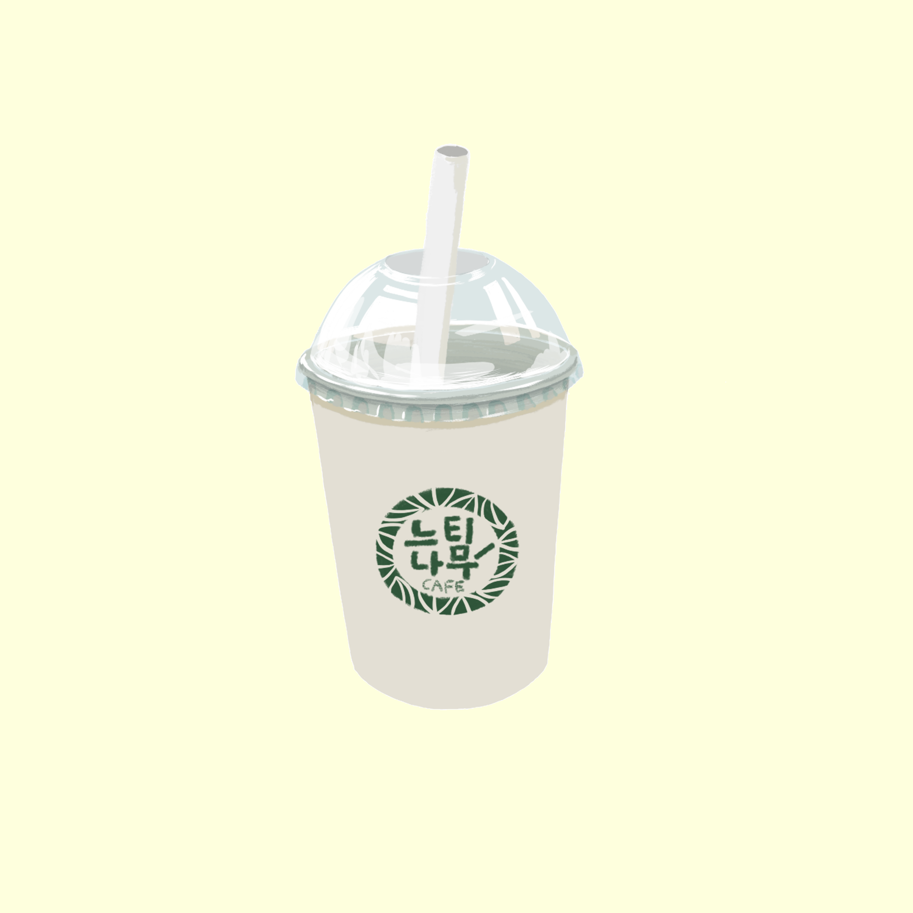
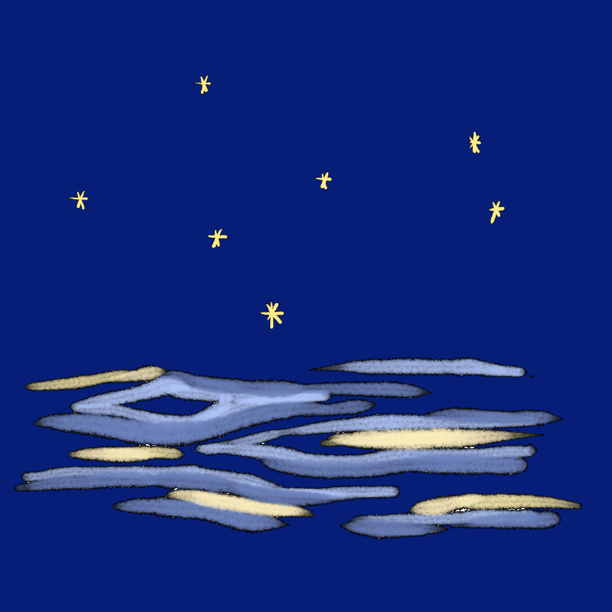

Project: SNUmentalcare
Myn
뒤로
학심단 온라인 프로젝트
2020년 2학기 ~ 2021년 1학기
서울대학교 대학생활문화원
역량개발부 산하 학생단체
학생심리건강지원단
Myn
학생심리건강지원단 8기 ~ 12기
개발총괄 및 배경음악 담당

Shining Dream
2020년 2학기 (11기) 프로젝트
자기결정성 이론 기반
기본심리욕구 테스트
"몽실몽실 나의 구름 이야기"
Cover Design by Into
Insta
@c_de.sigh_is

Blossom
2021년 1학기 (12기) 프로젝트
학심단 온라인 부스
"꽃망울
: 당신의 이야기가 피어날 수 있게"
Cover Design by Jiyoon Kim
Flipped Note
2021년 1학기 (12기) 프로젝트
학심단 온라인 부스
"꽃망울
: 당신의 이야기가 피어날 수 있게"
Cover Design by Into
Insta
@c_de.sigh_is

a Cup of Drink
2021년 1학기 (12기) 프로젝트
학심단 온라인 부스
"꽃망울
: 당신의 이야기가 피어날 수 있게"
Cover Design by Into
Insta
@c_de.sigh_is

New Hope
2021년 1학기 (12기) 프로젝트
학심단 온라인 부스
"꽃망울
: 당신의 이야기가 피어날 수 있게"
Cover Design by Into
Insta
@c_de.sigh_is